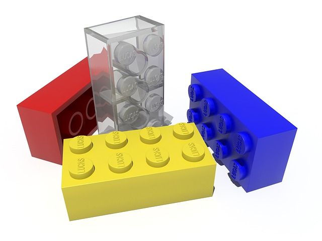

Slideshow made with RevealJS.
Quick tips:
- Arrows for navigation
- "O" for overview
- "S" for speaker notes
AngularJS*
toolset to extend HTML
* version 1.x
WHY
Cons
- Paradigm change about markup
- Unintuitive to debug when unfamiliar
- Need to have a good handle on prototypal inheritance
Cons
- Paradigm change about markup
- Unintuitive to debug when unfamiliar
- Need to have a good handle on prototypal inheritance
Pros
- Easy to get started & onboard new engineers
- Quicker implementation of complex features
- It's a google project (long-term support)
- Great testability
So we know frameworks.
Isn't angular somewhat like that?
Nope. It's more like a pile of legos.
AngularJS is a
toolset
to extend HTML
RECAP
HOW
Easy as 1-2-3!
1. Add angular js to your project.
2. Instantiate a module in your js
var app = angular.module('awesomeSauceApp', []);
3. Add `ng-app` attribute to html
<body ng-app='awesomeSauceApp'>
<!-- awesome sauce recipes -->
</body>
COMPONENT TYPES
views
controllers
directives
services
There are a few more, and more details - check out official conceptual overview
VIEWS
represent visible part of the application
declare bindings & directives
Example:
<body ng-app='mhTrackerList'>
<mh-navbar></mh-navbar>
<div ng-controller='MainCtrl'>
Here is a list of trackers for {{ user.name }}
<div class='container'>
<mh-fancy-frame ng-repeat="tracker in trackers | filter:q as results">
<div class='mh-user-tracker' data-tracker='tracker'></div>
</mh-fancy-frame>
</div>
</div>
<footer ng-include="'footer.html'"></footer>
</body>
- Looking at a template, it shouldn't feel cluttered and should give you an idea of what the app does (without details of implementation)
- Think declaratively: set state in JS, hide/show bits based on state (as opposed to controller manipulating DOM directly)
concept:
$scope
Think of it as jQuery
$(element).data() on steroids.
It belongs to a single html element - and one element only has one $scope.
Docs have a pretty good overview & examples of $scope
debugging tips:
you can easily access any scope in JS console, like so:
// First, select element in elements panel. Then, in JS console:
$0 // => element itself
angular.element($0).scope() // => associated scope, if there is one
Also, web inspector plugin for chrome is pretty handy.
$scope is
JS context of an
angular element
RECAP
CONTROLLERS

set up the
$scope
manage view interactions
give any existing html element superpowers
Example:

in JS, register a controller:
app.controller('SauceCtrl', function($scope) {
$scope.flavor = 'Strawberry';
$scope.tasteSauce = function() {
// cause intense gastronomical pleasure
console.log('Tasting happened.')
}
});
Then in HTML, just add it with ng-controller tag:
Example:
in JS, register a controller:
app.controller('SauceCtrl', function($scope) {
$scope.flavor = 'Strawberry';
$scope.tasteSauce = function() {
// cause intense gastronomical pleasure
console.log('Tasting happened.')
}
});
Then in HTML, just add it with ng-controller tag:
<div ng-controller='SauceCtrl'>
<button ng-click='tasteSauce()'>Taste {{ flavor }} Sauce</button>
</div>
controller code smell:
- does it do more than just coordinate view & model?
- does it have too many collaborators (dependencies)? Over 3 or 4 is too many (increases coupling).
- is it testable? (would it need many mocks? would it be tricky to test because of DOM manipulation?)

Strategies to clean up:

- evaluate if controller is managing too big a chunk of the page & cut it up into smaller bits
- create facade services that aggregate & abstract away the use of some dependencies necessary for a related task
Controllers
JS functions containing
user interaction logic
RECAP
concept:
dependency
injection
check out wikipedia for detailed description
Gotcha: minification can catch you out:
With injected services, minifiers won't know to properly keep track variable names. There are a couple of options to make your code minifier-safe.
Check out the docs & pick the syntax you prefer. Docs have a ton more info.
Gotcha: minification can catch you out:
With injected services, minifiers won't know to properly keep track variable names. There are a couple of options to make your code minifier-safe.
Check out the docs & pick the syntax you prefer. Docs have a ton more info.
Example:

MI6 might depend on built-in services like `$location` - and some custom ones:
angular.module('great_britain', [])
.controller('MI6', function($location, unlimitedAmmo, teleportationService, astonMartinService) {
// ...
})
subscribing
emitting
broadcasting